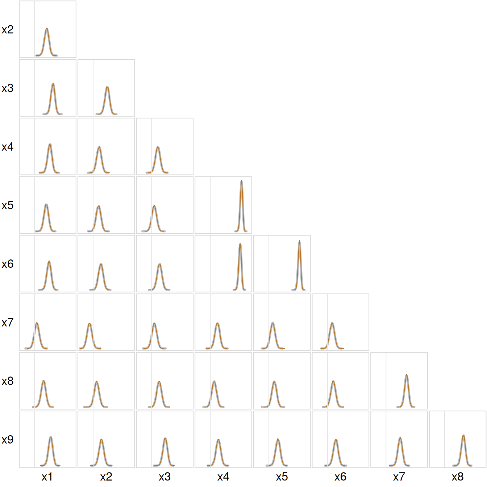

library(inlavanilla)
data(HolzingerSwineford1939, package = "lavaan")inla_vanilla() works on a vector of unconstrained parameters, and a correlation matrix is far from unconstrained: its diagonal is fixed at one, and it must be positive definite. A single correlation can go on the atanh scale, as in the multilevel article, but a matrix of them cannot be handled one entry at a time. Not every set of values in \((-1, 1)\) makes a valid correlation matrix.
This article writes a correlation matrix in terms of its canonical partial correlations, the unconstrained parameters that Stan uses, and puts the LKJ prior on it. Draws then give the correlations back, and the posterior marginals are checked against those of Stan.
The data
The Holzinger and Swineford (1939) data, from the lavaan package (Rosseel, 2012), hold the scores of 301 seventh- and eighth-grade students on nine ability tests. The tests are meant to measure three abilities, three tests each: visual (\(x_1\) to \(x_3\)), textual (\(x_4\) to \(x_6\)) and speed (\(x_7\) to \(x_9\)).
x <- as.matrix(HolzingerSwineford1939[paste0("x", 1:9)])
round(cor(x), 2)
#> x1 x2 x3 x4 x5 x6 x7 x8 x9
#> x1 1.00 0.30 0.44 0.37 0.29 0.36 0.07 0.22 0.39
#> x2 0.30 1.00 0.34 0.15 0.14 0.19 -0.08 0.09 0.21
#> x3 0.44 0.34 1.00 0.16 0.08 0.20 0.07 0.19 0.33
#> x4 0.37 0.15 0.16 1.00 0.73 0.70 0.17 0.11 0.21
#> x5 0.29 0.14 0.08 0.73 1.00 0.72 0.10 0.14 0.23
#> x6 0.36 0.19 0.20 0.70 0.72 1.00 0.12 0.15 0.21
#> x7 0.07 -0.08 0.07 0.17 0.10 0.12 1.00 0.49 0.34
#> x8 0.22 0.09 0.19 0.11 0.14 0.15 0.49 1.00 0.45
#> x9 0.39 0.21 0.33 0.21 0.23 0.21 0.34 0.45 1.00The model
Each student’s scores \(x_i\) are multivariate normal,
\[ x_i \sim N_9(\mu, \Sigma), \qquad \Sigma = \operatorname{diag}(\sigma) \, \Omega \, \operatorname{diag}(\sigma), \]
with means \(\mu\), standard deviations \(\sigma\) and correlation matrix \(\Omega\). Splitting \(\Sigma\) this way gives each part its own prior. The means get \(N(0, 10^2)\) priors and the standard deviations \(\text{Exp}(1)\) priors, both weakly informative for scores with standard deviations near one. The correlation matrix gets the LKJ prior of Lewandowski et al. (2009),
\[ p(\Omega) \propto \det(\Omega)^{\eta - 1}. \]
With \(\eta = 1\) it is uniform over correlation matrices; with \(\eta > 1\) it favours matrices near the identity, i.e. weaker correlations. We take \(\eta = 2\).
A correlation matrix from unconstrained values
A correlation matrix has a Cholesky factor \(L\), lower triangular with \(\Omega = LL^\top\), and each row of \(L\) has unit length. With \(d = 9\) tests, its \(d(d - 1)/2 = 36\) free entries can be built from one canonical partial correlation (CPC) \(z_{ij} \in (-1, 1)\) for each pair \(i > j\). Row \(i\) is filled from left to right, each entry taking the share \(z_{ij}\) of the length still left:
\[ L_{ij} = z_{ij} \sqrt{1 - \textstyle\sum_{k<j} L_{ik}^2} \quad (j < i), \qquad L_{ii} = \sqrt{1 - \textstyle\sum_{k<i} L_{ik}^2}, \]
with \(L_{11} = 1\). Any CPCs in \((-1, 1)\) give a valid correlation matrix, and each correlation matrix has exactly one set of them. On the atanh scale, \(w_{ij} = \operatorname{atanh} z_{ij}\), they are the unconstrained parameters we are after. This is how Stan builds its cholesky_factor_corr type.
The squared length left in row \(i\) before column \(j\) is \(\prod_{k<j} (1 - z_{ik}^2)\). The code keeps it on the log scale, so that \(L\) stays exact when \(|w_{ij}|\) is large and \(\tanh(w_{ij})\) rounds to one. It also returns the log-Jacobian of the map from \(w\) to the free entries of \(L\). The map is triangular, so this is a sum over its diagonal:
\[ \log \left| \frac{\partial L}{\partial w} \right| = \sum_{i>j} \log(1 - z_{ij}^2) + \frac{1}{2} \sum_{i>j} \log \Big( 1 - \textstyle\sum_{k<j} L_{ik}^2 \Big). \]
The first sum comes from \(\tanh\), and the second from the length that scales each \(z_{ij}\).
cholesky_corr <- function(w, d) {
z <- tanh(w)
log_1mz2 <- 2 * (log(2) - abs(w) - log1p(exp(-2 * abs(w)))) # log(1 - z^2)
L <- diag(d)
log_diag <- numeric(d) # log L[i, i]
log_jac <- sum(log_1mz2)
k <- 0
for (i in 2:d) {
log_left <- 0 # log of the squared length left in row i
for (j in 1:(i - 1)) {
k <- k + 1
L[i, j] <- z[k] * exp(log_left / 2)
log_jac <- log_jac + log_left / 2
log_left <- log_left + log_1mz2[k]
}
L[i, i] <- exp(log_left / 2)
log_diag[i] <- log_left / 2
}
list(L = L, log_diag = log_diag, log_jac = log_jac)
}The CPCs in w run along the rows of \(L\): \(z_{21}\), \(z_{31}\), \(z_{32}\), \(z_{41}\), and so on.
The LKJ prior
As a density of \(L\) instead of \(\Omega\), the LKJ prior gains the Jacobian of \(L \mapsto LL^\top\) and becomes
\[ p(L) \propto \prod_{i=2}^{d} L_{ii}^{\, d - i + 2\eta - 2}, \]
which is Stan’s lkj_corr_cholesky. In the exponent, \(2\eta - 2\) comes from \(\det(\Omega)^{\eta - 1} = \prod_i L_{ii}^{2\eta - 2}\), and \(d - i\) from the Jacobian. The normalising constant comes from the CPCs. Under the LKJ prior they are independent, with \((z_{ij} + 1)/2 \sim \text{Beta}(b_j, b_j)\) and \(b_j = \eta + (d - 1 - j)/2\) (Lewandowski et al., 2009), so the constant is a product of Beta functions. With it, fit$logml is a proper log marginal likelihood, as it must be to compare, say, two values of \(\eta\).
# Shape b_j of each CPC's Beta distribution, in the order of w
cpc_shape <- function(d, eta) {
eta + (d - 1 - sequence(1:(d - 1))) / 2
}
lkj_cholesky_lpdf <- function(log_diag, eta) {
d <- length(log_diag)
b <- cpc_shape(d, eta)
sum((d - 1:d + 2 * eta - 2) * log_diag) -
sum(lbeta(b, b) + (2 * b - 1) * log(2))
}The independent Betas also give a check of the Jacobian. On the atanh scale each \(w_{ij}\) has the density \((1 - z_{ij}^2)^{b_j} / \{2^{2b_j - 1} B(b_j, b_j)\}\), so the LKJ density of \(L\) times the Jacobian must equal their product, at any \(w\):
The prior could be written as these Betas directly. The LKJ form, with its Jacobian, is the one that carries over to other priors on \(\Omega\).
The log-posterior
The parameters are the nine means, the nine log standard deviations and the 36 CPCs on the atanh scale: 54 in all. Each row is \(x_i = \mu + \operatorname{diag}(\sigma) L e_i\) with \(e_i \sim N(0, I)\), so the log-likelihood is that of the \(e_i\), less \(n \log \det \{\operatorname{diag}(\sigma) L\} = n \sum_j (\log \sigma_j + \log L_{jj})\). The prior on \(\sigma_j\) gets the log-Jacobian \(\log \sigma_j\).
unpack <- function(theta, d) {
log_sigma <- theta[d + 1:d]
c(
list(mu = theta[1:d], log_sigma = log_sigma, sigma = exp(log_sigma)),
cholesky_corr(theta[-(1:(2 * d))], d)
)
}
logpost <- function(theta, x, eta) {
d <- ncol(x)
p <- unpack(theta, d)
e <- forwardsolve(p$L, (t(x) - p$mu) / p$sigma)
loglik <- sum(dnorm(e, log = TRUE)) -
nrow(x) * (sum(p$log_sigma) + sum(p$log_diag))
loglik +
sum(dnorm(p$mu, 0, 10, log = TRUE)) +
sum(dexp(p$sigma, rate = 1, log = TRUE) + p$log_sigma) +
lkj_cholesky_lpdf(p$log_diag, eta) +
p$log_jac
}The fit
The means and standard deviations start at their sample values, and the CPCs at zero, the identity:
init <- c(
setNames(colMeans(x), paste0("mu_x", 1:9)),
setNames(log(apply(x, 2, sd)), paste0("log_sigma_x", 1:9)),
setNames(rep(0, 36), paste0("atanh_z", rep(2:9, 1:8), sequence(1:8)))
)
fit <- inla_vanilla(logpost, init, x = x, eta = 2)
#> ✔ Found the posterior mode in 34 iterations [2.2s]
#> ✔ VB mean correction, max shift 0.38σ [3.1s]
#> ✔ Fitted 54 skew-normal marginals [4.7s]The fit takes about 10 seconds, and summary(fit) flags nothing. The first six CPCs, on the atanh scale:
round(fit$summary[19:24, ], 3)
#> Mean SD 2.5% 50% 97.5% Mode
#> atanh_z21 0.285 0.056 0.176 0.285 0.394 0.285
#> atanh_z31 0.447 0.056 0.338 0.447 0.557 0.447
#> atanh_z32 0.241 0.057 0.130 0.241 0.351 0.241
#> atanh_z41 0.364 0.055 0.256 0.364 0.472 0.364
#> atanh_z42 0.044 0.056 -0.065 0.044 0.153 0.044
#> atanh_z43 -0.018 0.056 -0.127 -0.018 0.092 -0.018Only the CPCs in the first column of \(L\) are correlations. The others are partial correlations: \(z_{32}\) is the correlation of \(x_3\) and \(x_2\) given \(x_1\), and \(z_{43}\) that of \(x_4\) and \(x_3\) given \(x_1\) and \(x_2\). They are hard to read, which is what draws are for.
Back to the correlations
Each draw gives \(\Omega = LL^\top\), and its correlations are named after their row and column:
The correlations within each scale:
within <- c("r12", "r13", "r23", "r45", "r46", "r56", "r78", "r79", "r89")
t(apply(draws[, within], 2, function(r) {
c(mean = mean(r), sd = sd(r), quantile(r, c(0.025, 0.975)))
})) |>
round(3)
#> mean sd 2.5% 97.5%
#> r12 0.277 0.051 0.174 0.375
#> r13 0.419 0.046 0.326 0.505
#> r23 0.322 0.050 0.222 0.416
#> r45 0.712 0.028 0.655 0.763
#> r46 0.680 0.030 0.618 0.736
#> r56 0.698 0.029 0.639 0.752
#> r78 0.468 0.044 0.380 0.551
#> r79 0.322 0.050 0.222 0.417
#> r89 0.427 0.045 0.336 0.512The three textual tests correlate at about 0.7, with posterior SDs under 0.03. The visual and speed tests correlate more weakly, at 0.3 to 0.5, and some correlations across scales are as large: \(x_1\) and \(x_9\), a visual and a speed test, correlate at about 0.37.
Checking against Stan
The same model in Stan, with the same priors:
data {
int<lower=1> N;
int<lower=1> D;
array[N] vector[D] x;
real<lower=0> eta;
}
parameters {
vector[D] mu;
vector<lower=0>[D] sigma;
cholesky_factor_corr[D] L;
}
model {
mu ~ normal(0, 10);
sigma ~ exponential(1);
L ~ lkj_corr_cholesky(eta);
x ~ multi_normal_cholesky(mu, diag_pre_multiply(sigma, L));
}
generated quantities {
corr_matrix[D] Omega = multiply_lower_tri_self_transpose(L);
}Its draws were summarised ahead of time (lab/correlation-article.R in the package source), so this page does not need Stan to build:
Stan took about 4 seconds to sample its 20,000 draws, after half a minute compiling the model.
For each block of parameters, the largest gap between the posterior means, in Stan’s posterior SDs, and the range of the ratio of the SDs:
gap <- (colMeans(draws) - ref$summary$mean) / ref$summary$sd
sd_ratio <- apply(draws, 2, sd) / ref$summary$sd
block <- rep(c("means", "SDs", "correlations"), c(9, 9, 36))
data.frame(
max_gap = tapply(abs(gap), block, max),
sd_ratio_min = tapply(sd_ratio, block, min),
sd_ratio_max = tapply(sd_ratio, block, max)
)[c("means", "SDs", "correlations"), ] |>
round(2)
#> max_gap sd_ratio_min sd_ratio_max
#> means 0.01 0.97 0.99
#> SDs 0.01 0.99 1.01
#> correlations 0.02 0.96 1.00The means agree to a few hundredths of a standard deviation, and the spreads to within 4%. All 36 correlations, Stan in grey, laid out as the lower triangle of \(\Omega\), each on the same axis from \(-0.3\) to \(0.9\) with a faint line at zero:
op <- par(mfrow = c(8, 8), mar = rep(0.1, 4), oma = c(2, 2, 0, 0))
for (i in 2:9) {
for (j in 1:8) {
if (j >= i) {
plot.new()
next
}
r <- paste0("r", j, i)
d_ref <- ref$density[[r]]
plot(
d_ref$x, d_ref$y, type = "l", lwd = 3, col = "grey75",
xlim = c(-0.3, 0.9), ylim = c(0, 15), axes = FALSE, ann = FALSE
)
lines(density(draws[, r], n = 256), col = "#B5772E")
abline(v = 0, col = "grey90")
box(col = "grey85")
}
}
at <- (1:8 - 0.5) / 8
mtext(paste0("x", 1:8), side = 1, line = 0.5, outer = TRUE, at = at)
mtext(
paste0("x", 2:9), side = 2, line = 0.5, outer = TRUE, at = 1 - at,
las = 1
)
par(op)Reliability
Draws give any function of the parameters, not only \(\Omega\). A natural one here is the reliability of each three-test scale. Cronbach’s (1951) \(\alpha\) for a scale of \(k\) tests is
\[ \alpha = \frac{k}{k - 1} \left( 1 - \frac{\sum_j \Sigma_{jj}}{\sum_j \sum_l \Sigma_{jl}} \right), \]
with the sums over the tests of the scale, so it needs both \(\sigma\) and \(\Omega\):
reliability <- function(theta) {
p <- unpack(theta, 9)
s <- outer(p$sigma, p$sigma) * tcrossprod(p$L)
scales <- list(visual = 1:3, textual = 4:6, speed = 7:9)
sapply(scales, function(j) 1.5 * (1 - sum(diag(s[j, j])) / sum(s[j, j])))
}
set.seed(1)
alpha <- sampling(fit, nsamp = 20000, fun = reliability)
data.frame(
mean = colMeans(alpha),
sd = apply(alpha, 2, sd),
stan_mean = ref$alpha$mean,
stan_sd = ref$alpha$sd
) |>
round(3)
#> mean sd stan_mean stan_sd
#> visual 0.603 0.038 0.603 0.039
#> textual 0.871 0.012 0.870 0.012
#> speed 0.669 0.032 0.669 0.033The textual scale is the most reliable, at 0.87, and the visual scale the least, at 0.60. Stan computed its \(\alpha\) in its own generated quantities, from code separate from reliability(), and the two agree to the third decimal.
Over 300 students for 54 parameters is plenty. With far fewer observations per parameter the marginals come out too narrow, as for the fixed effects with six subjects in the multilevel article.
References
Cronbach, L. J. (1951). Coefficient alpha and the internal structure of tests. Psychometrika, 16(3), 297–334. https://doi.org/10.1007/BF02310555
Holzinger, K. J., & Swineford, F. (1939). A study in factor analysis: The stability of a bi-factor solution (Supplementary Educational Monographs, No. 48). University of Chicago.
Lewandowski, D., Kurowicka, D., & Joe, H. (2009). Generating random correlation matrices based on vines and extended onion method. Journal of Multivariate Analysis, 100(9), 1989–2001. https://doi.org/10.1016/j.jmva.2009.04.008
Rosseel, Y. (2012). lavaan: An R package for structural equation modeling. Journal of Statistical Software, 48(2), 1–36. https://doi.org/10.18637/jss.v048.i02